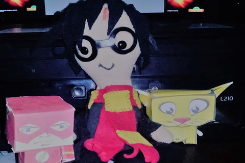

Buenas. Me llamo Ramirez Quiroz Jose Luis. Nací un 1 de marzo de 1993, en la maravillosa ciudad de La Encañada (Peru) pero a los 3 años, mi familia decidió mudarse a la provincia Cajamarca (Perú también) donde me crié hasta volar del nido.
Fue a mis 8 años que llegó el primer ordenador a casa. Dio la inmensa casualidad de que el único escritorio libre estaba en mi dormitorio, y la proximidad con aquella enorme caja metálica en tonos grises, ayudó a mi fascinación… ¡un mecanismo sin precedentes! ¿Cómo diantres podía pulsar una tecla, y que esta apareciese en la pantalla al instante? La magia de la informática me cautivó desde ese mismo momento. Aquel sería el comienzo de una larga amistad.
Galeria de fotografias
